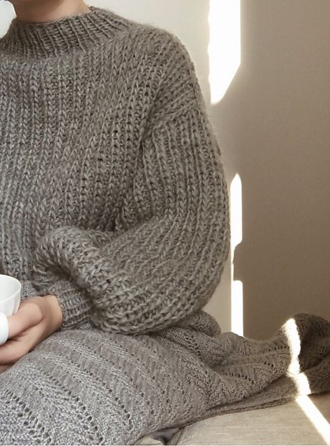
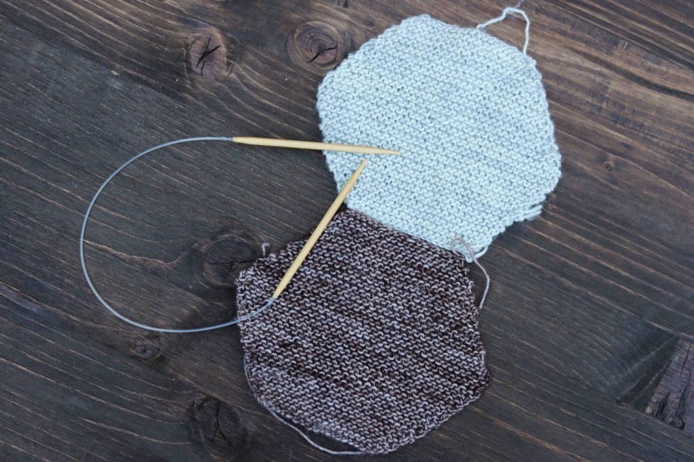
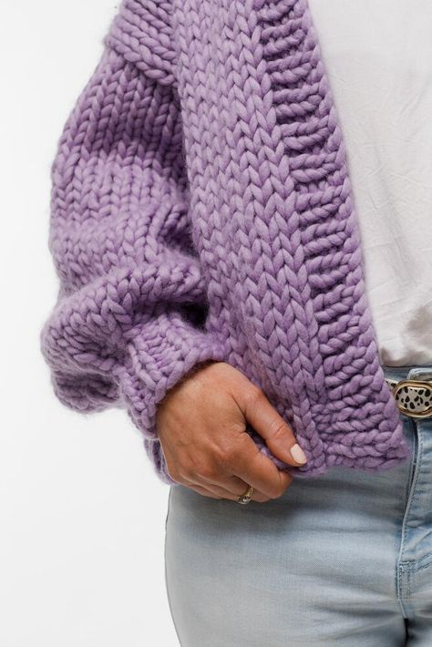
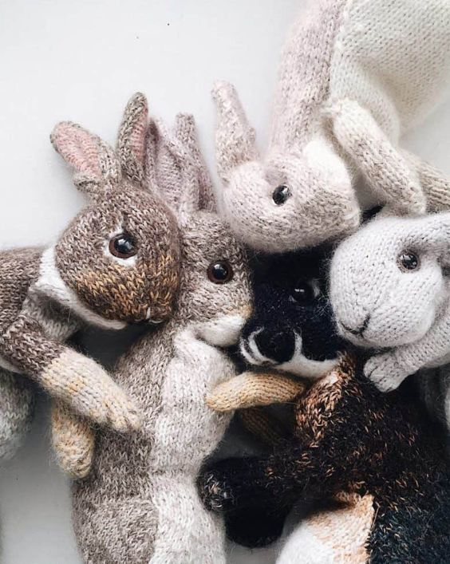
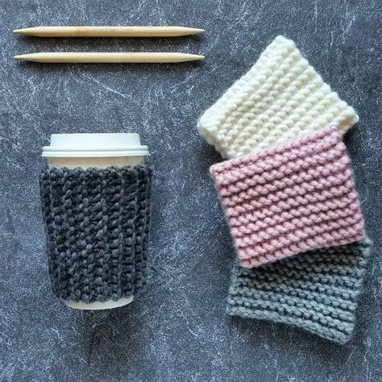
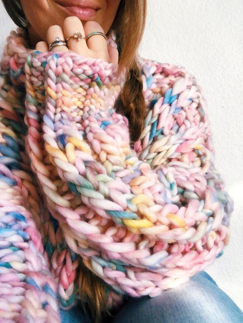
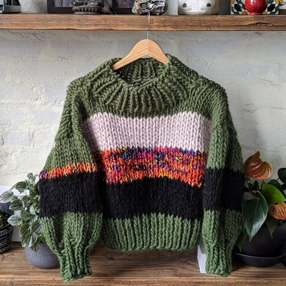
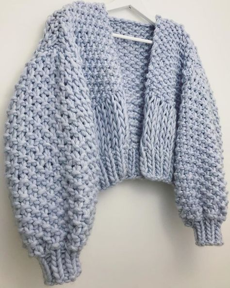

Home
Patterns
Tips & Tricks
My Projects
Gallery
Community
Gallery
Feel free to browse for inspiration.

cozy gray knit sweater

knitted hexagon quilt

purple knit cardigan

knitted bunny plushies

knitted coffee cup sleeves

bright colorful knit sweater

striped knit sweater

knit cardigan with big sleeves